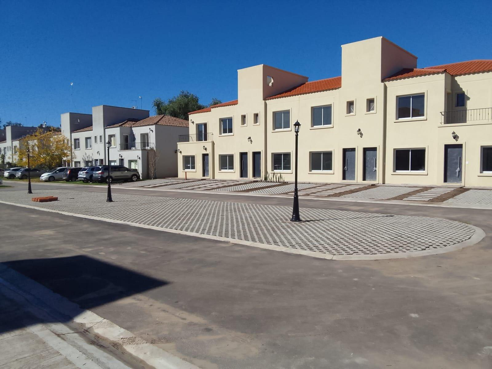

Pilar Norte

A pocos metros del puente de Las Magnolias, en el km 50 de Panamericana Ramal Pilar, con los puntos de encuentro de los Shoppings Torres del Sol y Palmas del Pilar. El Edificio Pilar Norte, se encuentra distribuido en 4 plantas con acceso por escaleras y dos ascensores. Conformado por 30 unidades funcionales. Partes comunes: Sum, Pileta, Solárium, Parrillas, Toilette, Bauleras.
Más InformaciónLa Angelica
El barrio cuenta con pileta, solárium, gimnasio, SUM con parrilla, juegos infantiles. Servicio de vigilancia las 24hs, Cámaras en todo el perímetro, sensores de movimiento, control de ingreso y cocheras de cortesía. Los duplex´s que integran el complejo están desarrolladas como se expresa a continuación:
Planta Baja:
- Living comer con cocina integrada
- Toilette de recepción
- Jardín con parrilla
- Galería semicubierta con lavadero.
- Cochera privada
Planta Alta:
- De 1 a 3 dormitorios
- Baño completo
Equipamiento: Las unidades cuentan con Caldera Longvie y Aire Acondicionado en el living y en los dormitorios. Las unidades de la segunda etapa y de la tercer etapa, cuentan además, con domitorio en suite y con calefacción por losa radiante
Más InformaciónEstación Pilará

Se trata de un Centro Comercial de cercanía, que cuenta con un total de 40 locales, 20 oficinas y 9 consultorios, Cuenta con estacionamiento privado con capacidad para 130 vehículos, seguridad 24hs, circuito cerrado de cámaras, ascensor para acceso a consultorios y oficinas.
Más Información